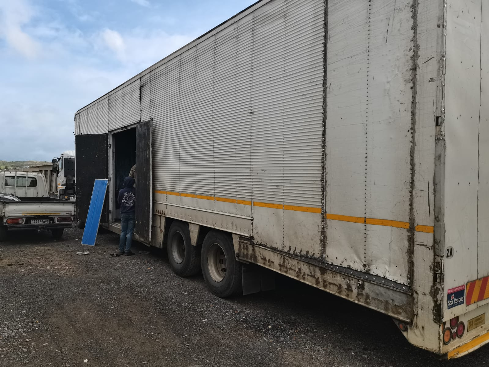
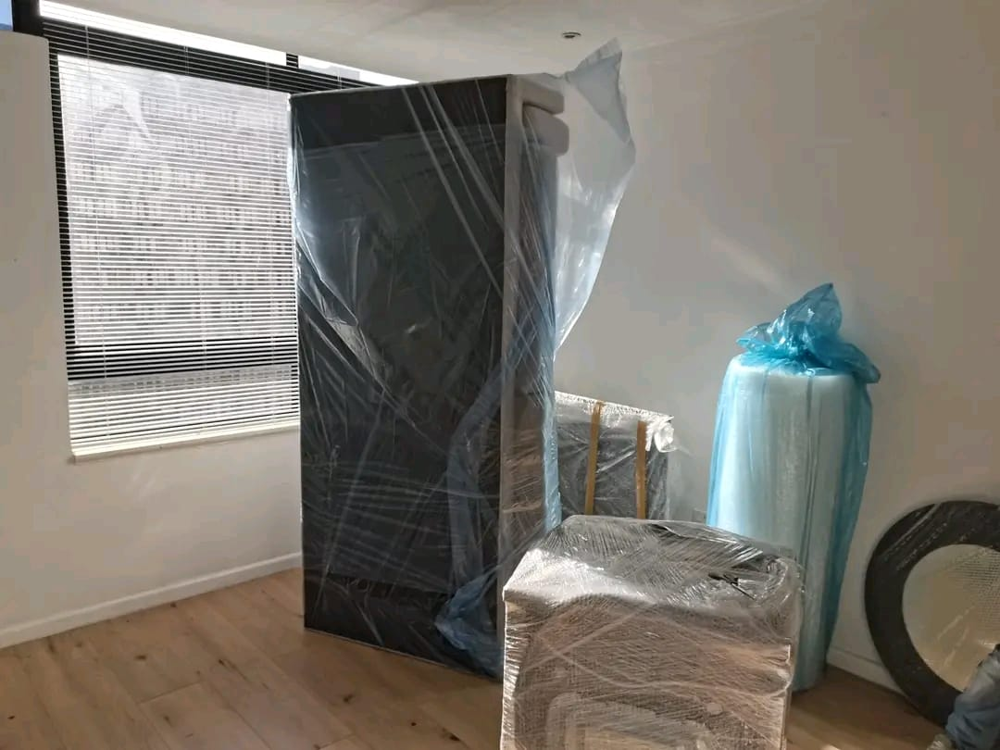

Furniture & House Removals
Stress-free relocation for your home or office anywhere in Cape Town. Our trained team handles your belongings with the utmost care, ensuring a smooth and efficient move every time.
Learn MoreWize Removal — Reliable • Fast • Affordable
Serving Southern Suburbs, Northern Suburbs & Atlantic Seaboard. Your goods, our priority!
We treat every item as if it were our own. From fragile valuables to heavy furniture, every piece is protected and secured during transport.
We respect your time. Our team arrives on schedule and completes jobs efficiently so your move day stays stress-free.
No hidden costs. You get a clear, honest quote upfront. We keep our rates competitive so you always get great value.




We offer furniture removal, rubbish removal and single-item collection across all major Cape Town suburbs and beyond.
Covering Claremont, Kenilworth, Rondebosch, Wynberg, Tokai and surrounding areas with prompt, affordable removal services.
View Southern SuburbsServing Kraaifontein, Brackenfell, Bellville, Durbanville, Parow and surrounds — our home base and fastest response area.
View Northern SuburbsRemovals in Sea Point, Green Point, De Waterkant, Camps Bay and the City Bowl — handled with care and on time.
View Atlantic Seaboard